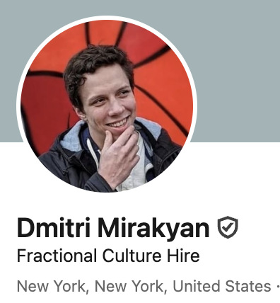
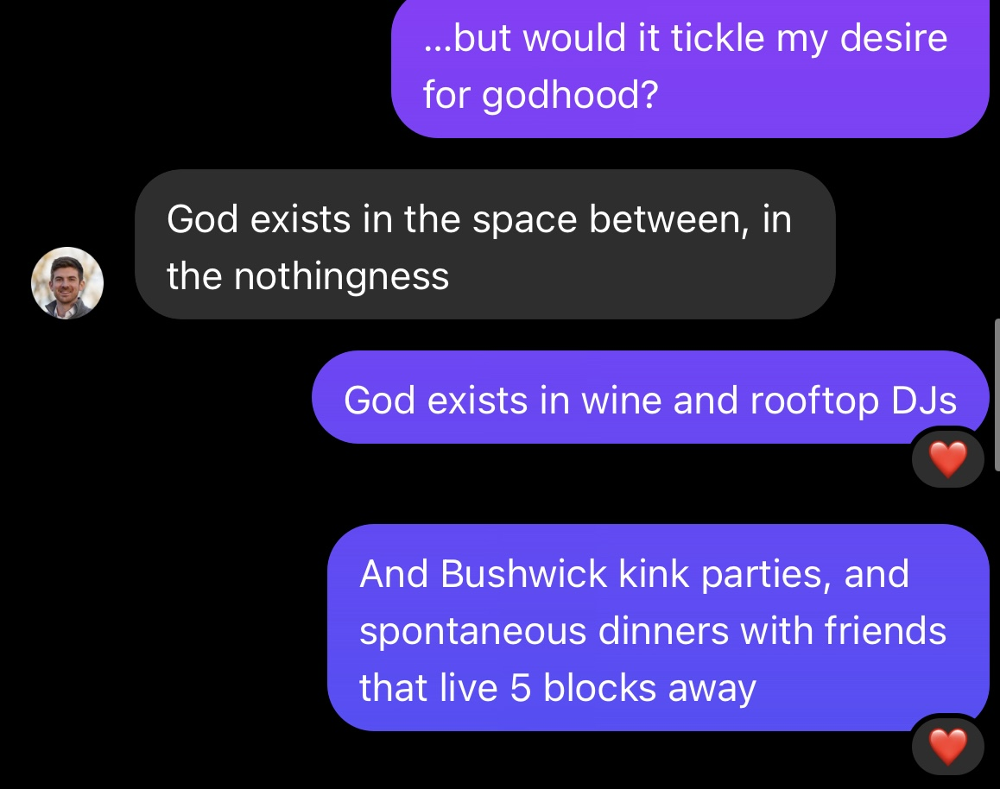
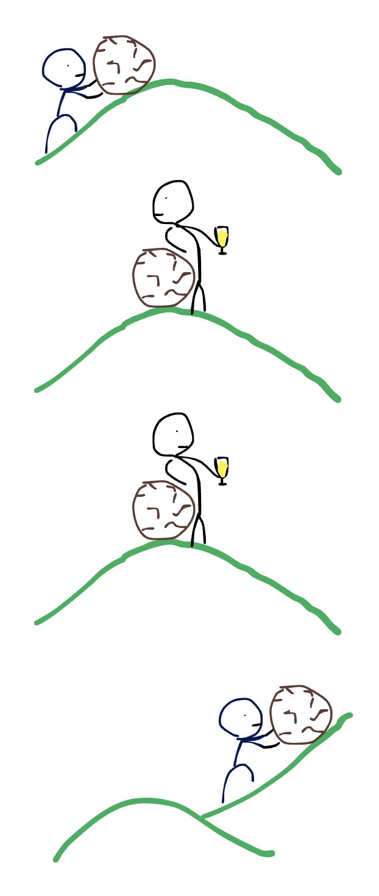
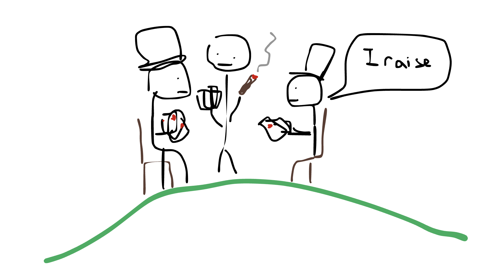
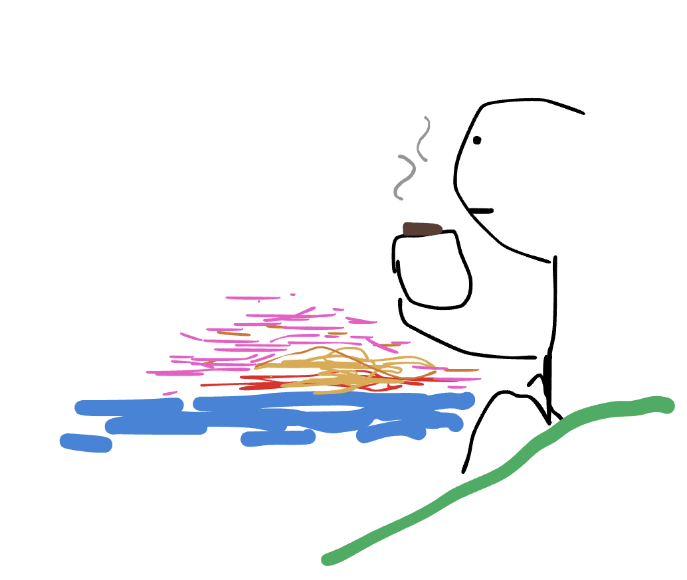
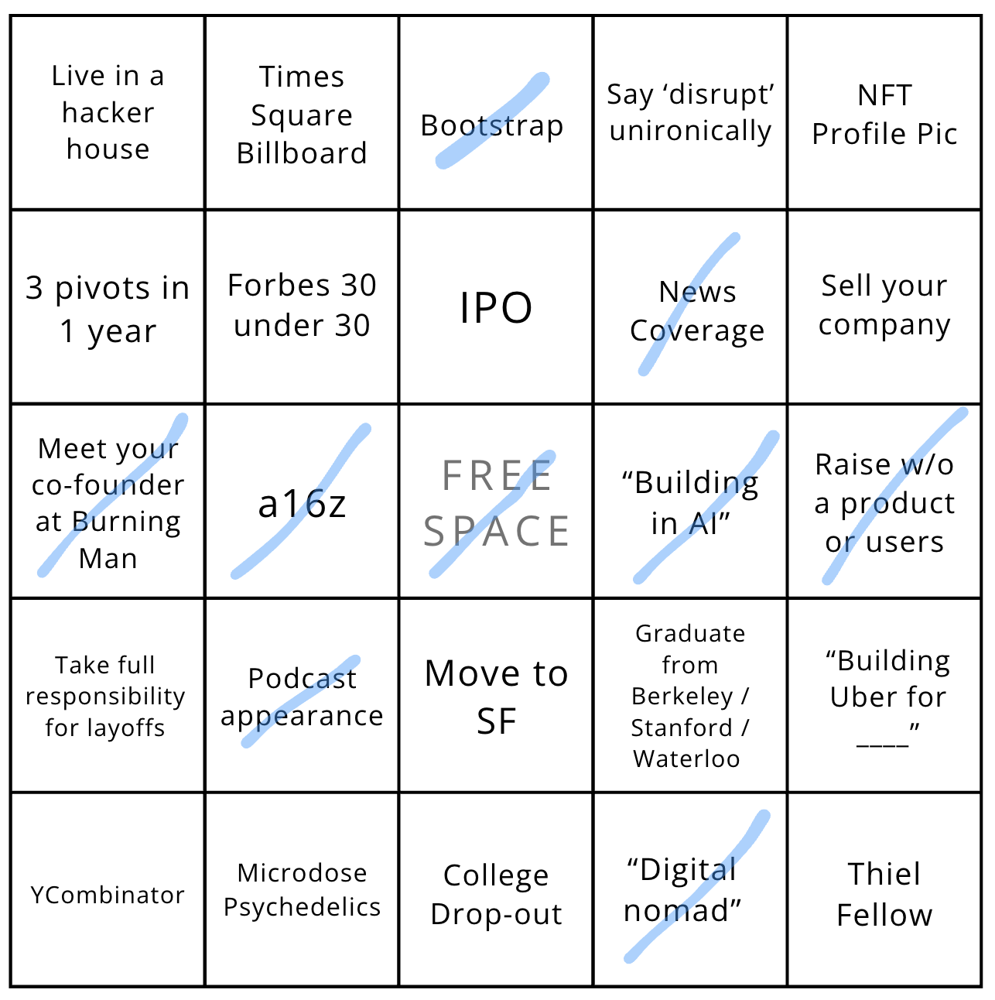
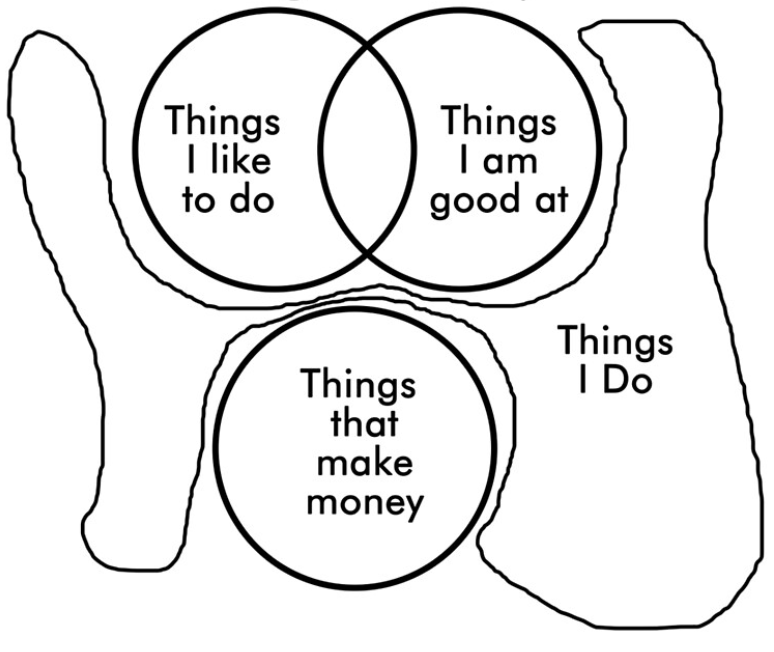
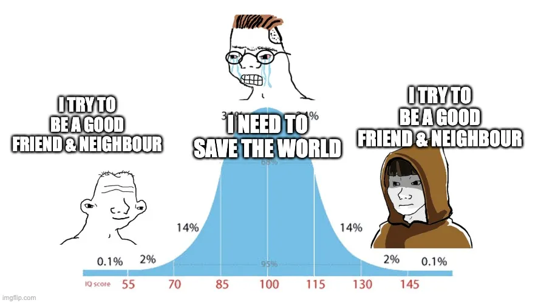

Turns out I was a few letters off.
About 6 months ago I left my full-time job and insisted that I was now retired. The app I built nights and weekends was now comfortably paying my bills and growing at a steady pace.
The goal was to pick up hobbies. Read more. Write better. Find god.
So I looked.
The experiment
I did all the things my college career center told me not to. Made games. Wrote non-erotic non-poetry for the erotic poetry club. Updated my Hinge job to "culture hire" and "mail thief" just to see how people would react. Bought tickets to Asia on a 2-day notice. Took cooking classes. I even hired a paid intern just to build the dumbest thing I could imagine.

It took all of a month of goofing off to realize that given the opportunity to do anything at all, all I wanted to do was:
- build consumer software
- day drink with the homies
God wasn't at Machu Picchu or the writing club. But there were glimmers of him at early morning bottomless brunch, and late nights trying to breathe a new project into existence.

The realization
I spent another 2 months trying to prove this theory wrong. Mostly because it felt like such an unsatisfying conclusion. "Happiness was inside of you all along." Really? If this was somebody else's blog post I'd be rolling my eyes and clicking back to scroll onto the next thing.
But there's gotta be a reason so many people that get great at a profession keep doing it even after they no longer have to work. Why do founders that exit their first company immediately go back to chewing glass.
Rock pushing
The metaphor I've always had in my head about life was pushing a rock up a hill. Except you're not Sisyphus so the rock doesn't roll back down. Instead you pat yourself on the back, celebrate a bit. Then look around and start pushing a rock up the next hill.

I used to view this pattern with disdain. No matter what you accomplish, you quickly get accustomed to that level of attainment. Then you start to invent new problems for yourself. And no matter how many hills you climb, there's always someone more accomplished than you.
There's a million better metaphors invented about the futility of chasing attainment. Hedonic treadmill. Keeping up with the Joneses. Basically any moderately edgy piece of media that touches on adult life in the US.
Except at some elevation the rock pushing starts to become fun. The challenge and the familiar weight in your arms starts to feel enjoyable.
You push a rock to the top and get rewarded with currency. At the next hill you're invited to a club for people that have climbed it. Someone asks you about your rock-pushing technique, and you get a warm glow from the admiration. You start attending poker games with fellow moderately accomplished rock pushers.

This feeling doesn't hold true for everyone. Most people either treat work as a necessary evil, finding fulfillment in their hobbies, or just living for the weekend. Others found their passion but had to change lanes - either due to financial constraints or burnout.
So what makes some careers fun while others exhausting?
In my opinion, good work feels like a video game. Too easy and you get complacent. Too hard and you eventually give up or start questioning your own competence. Not enough novelty or rewards and eventually you get bored regardless.
Running a business seems uniquely well suited for this sort of fun, assuming you're willing to wade through the waist-deep river of shit it takes to arrive there.
On a median day doing founder stuff feels like a videogame. On the worst days it's an all-consuming anxiety. But it's never boring. And on a clear-weather day you can take a moment to sit back and appreciate the view from the top of the hill.

…Which brings me back to today. Attaining extraordinary outcomes often comes down to configuring your life in a way that invites opportunities. So I'm taking a new leap. I can now proudly say "I've raised $X from a16z with no product, no customers, and no revenue, with a co-founder I met at Burning Man." I think I get a whole Bingo from this one alone.

Given the option to do anything it turns out I just want to build consumer software. So that's what I'm gonna do. YourMove AI is still growing - although I am looking for someone to help me run it. If you know anyone that wants to intern as CEO of a tiny business, do let me know.
Footnotes
1. The obvious boring reasons to "why keep going after you've made money" are a) inertia, b) altruism, or c) greed. It couldn't be purely inertia. I certainly didn't feel eager to go back to any of the other things I did for money. Most 9-to-5 jobs don't have a shred of altruism unless you're one of the delusional people thinking your job at Deloitte is making the world a better place. Greed is probably valid but would make for a less satisfying post, so we're going with the rock thing. ↩
2. Data scientist, analyst, consultant, mechanical engineer, SAT tutor, and manager-flavored versions of most of the above. ↩
3. Finding your life's work but giving it up for financial reasons is extremely common among friends that went into creative fields straight out of college. Turns out unless you've got a trust fund, it's brutally hard to pay the bills with art. Finding well-paying careers that are creatively stimulating works better - but they don't teach you that line of thinking in high school. ↩

4. Capitalism is a video game. But if you're on Reddit or a Buddhist monastery it's an evil one where rent is theft and everyone is crushed under the wheels. And if you're in certain SF circles it's the one true measure of your worth. The right answer might be somewhere in between. Live a good life. Be a good friend and neighbor. ↩
